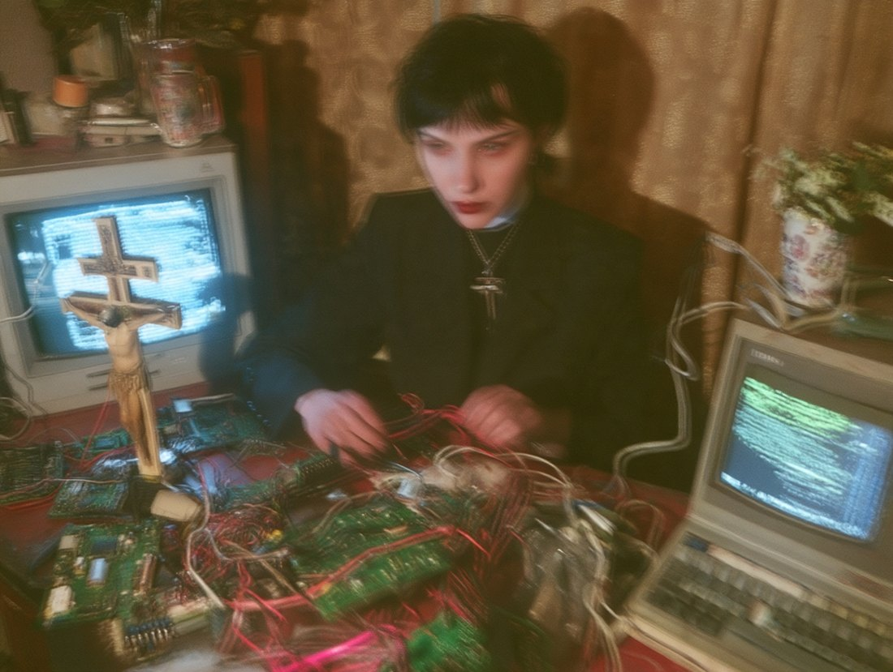

when the government got involved lmao
hi i’m atrocity!
formerly Sister Montgomery LOL
...until i had a ~vision~, and learned the TRUTH about everything.
i had to leave the church, but dedicated my life to serving what i know now are the real angels <3
some religions have got this right though...
THE END IS NEAR
but there is a path to salvation, you can find it on my page!!
me as a nun :3

working on their bodies!!!